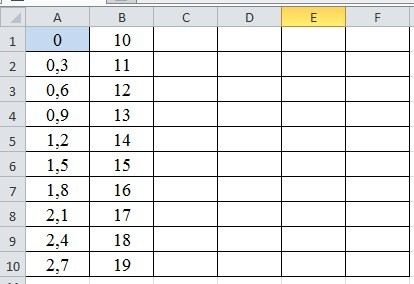
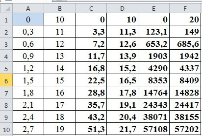
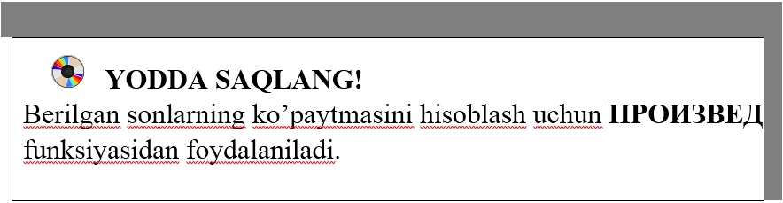

14-DARS. KO‘PAYTMANI HISOBLASHGA OID FUNKSIYALAR
Ko‘paytma matematik ifodalarda keng tarqalgan amallardan biri bo‘lib, biz ushbu darsda ko‘paytma qatnashgan hisoblashlarning o‘ziga xos usullari bilan tanishamiz:
1-usul. Katakka = belgi qo‘yilib kerakli ifodalar ko‘paytiriladi; 2-usul. Ko‘paytmani hisoblash funksiyasidan foydalaniladi. 1-mashq. MS Excel 2010 da quyidagi jadval mavjud:

• C ustunga A va B ustundagi sonlarning ko‘paytmasini hisoblang;
• D ustunga A va B ustundagi sonlarning yig‘indisini hisoblang;
• E ustunga A, B, C, D ustundagi sonlarning ko‘paytmasini hisoblang;
• F ustunga A, B, C, D, E ustundagi sonlarning yig‘indisini hisoblang;
Bajarish:
• A1:A10 va B1:B10 bloklariga boshlang‘ich ma’lumotlar kiritiladi;
• C1 katagida A1:B1 blokining = ПРОИЗВЕД(A1:B1) ko‘paytmasi hosil qilinadi;
• D1 katagida A1:B1 blokining =A1+B1 yig‘indisi hosil qilinadi;
• E1 katagida A1:D1 blokning = ПРОИЗВЕД(A1:D1) ko‘paytmasi hosil qilinadi;
• F1 katagida A1:E1 blokning =СУММ(A1:E1) yig‘indisi hosil qilinadi:



1. Berilgan sonlarning ko‘paytmasini hisoblashning nechta usulini bilasiz?
2. Berilgan 20 ta sonning ko‘paytmasini ПРОИЗВЕД funksiyasidan foydalanmay hisoblang.
3. Quyidagi 10,20, 40, 80, 160 sonlarning yig‘indisini 40 soniga bo‘ling.

1. Quyidagi 10,20, 40, 80, 160 sonlarining ko‘paytmasidan 56 sonini ayiring.
2. A, B, C ustunlarga ixtiyoriy 20 ta son kiriting. A va C ustundagi sonlarning ko‘paytmasidan B, C ustundagi sonlarning ayirmasini D ustunda hosil qiling.